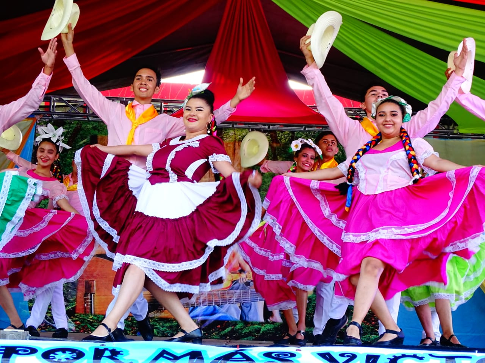

Las Polkas del Norte
Matagalpa, conocida como la "Perla del Septentrión", destaca por su Traje de Matagalpa. Este traje refleja la riqueza cultural de la región, combinando elementos indígenas y coloniales en un diseño único y colorido.
El traje de Matagalpa se caracteriza por su elegancia y detalles intrincados, que incluyen bordados elaborados y accesorios tradicionales. La mujer que lo porta suele llevar un vestido largo y amplio, adornado con encajes y bordados, mientras que el hombre viste un traje elegante con chaleco y sombrero, reflejando la influencia española en la vestimenta.
Este traje es una expresión de la identidad cultural de Matagalpa, y es utilizado en festividades y celebraciones locales, destacando la importancia de preservar nuestras tradiciones y herencia cultural.

← Volver a la Página Principal